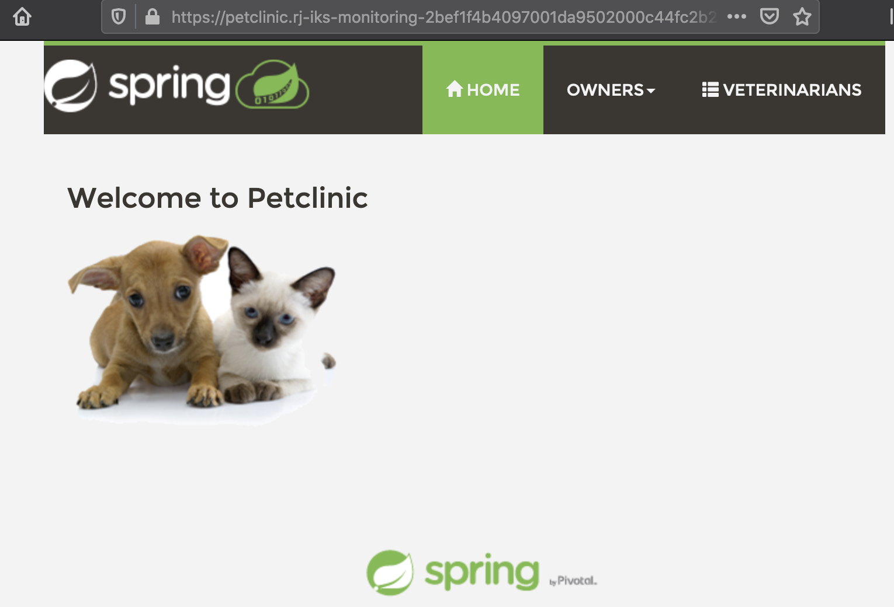

Deploy sample application to IKS cluster¶
In this lab, you will deploy the Petclinic application into your kubernetes cluster. Check the lab introduction to learn more about this application. Logs from the application will be used for analysis in the next set of labs.
Step 1: Deploy the Petclinic application¶
Use the IBM Cloud Shell to deploy the sample Petclinic application.
-
Get the source code from the Git repo
Clone the repo. Run the commands listed from the the
IBM Cloud Shell.git clone https://github.com/IBM/kubernetes-logging-and-monitoring.git cd kubernetes-logging-and-monitoring/src -
Deploy four microservices of the sample petclinic application by running the command below:
kubectl create -f k8s/app/This deploys$ kubectl create -f k8s/app/ deployment.apps/api-gateway created service/api-gateway created deployment.apps/customers created service/customers-service created deployment.apps/vets created service/vets-service created deployment.apps/visits created service/visits-service createdDeploymentandServiceresources for each microservice component. -
Verify the deployment resources. Note that 4 pods and 4 services in addition to deployments and replicaset are created for this deployment.
kubectl get all$ kubectl get all NAME READY STATUS RESTARTS AGE pod/api-gateway-575f59b7d8-7jhmc 1/1 Running 0 52s pod/customers-687749cfb-g8mkv 1/1 Running 0 52s pod/vets-6bb6655b7f-wkbcw 1/1 Running 0 52s pod/visits-784749c647-lczr6 1/1 Running 0 52s NAME TYPE CLUSTER-IP EXTERNAL-IP PORT(S) AGE service/api-gateway NodePort 172.21.20.70 <none> 80:32002/TCP 52s service/customers-service NodePort 172.21.99.121 <none> 80:32003/TCP 52s service/kubernetes ClusterIP 172.21.0.1 <none> 443/TCP 12h service/vets-service NodePort 172.21.63.239 <none> 80:32005/TCP 52s service/visits-service NodePort 172.21.156.238 <none> 80:32004/TCP 52s NAME READY UP-TO-DATE AVAILABLE AGE deployment.apps/api-gateway 1/1 1 1 52s deployment.apps/customers 1/1 1 1 52s deployment.apps/vets 1/1 1 1 52s deployment.apps/visits 1/1 1 1 52s NAME DESIRED CURRENT READY AGE replicaset.apps/api-gateway-575f59b7d8 1 1 1 52s replicaset.apps/customers-687749cfb 1 1 1 52s replicaset.apps/vets-6bb6655b7f 1 1 1 52s replicaset.apps/visits-784749c647 1 1 1 52s
Step 2: Deploy Ingress resource¶
When deployed the sample application to a non-Lite tier IKS cluster, it's possible to expose the application with an external hostname.
-
Retrieve
Ingress Subdomain. Ensure the value for variableMYCLUSTERis set.Lookup the value for ingress subdomain and set that value to the environment variableecho $MYCLUSTERINGRESS_SUBDOMAIN.ibmcloud ks cluster get -c $MYCLUSTER export INGRESS_SUBDOMAIN=`ibmcloud ks cluster get -c $MYCLUSTER --output json | jq -r '.ingressHostname'` echo "\n Ingress subdomain: ${INGRESS_SUBDOMAIN}"Retrieving cluster c0i8ggbd0hnsl5uiaelg... OK Name: rj-iks-monitoring ID: c0i8ggbd0hnsl5uiaelg State: normal Status: All Workers Normal Created: 2021-02-11T01:28:33+0000 Location: dal10 Pod Subnet: 172.30.0.0/16 Service Subnet: 172.21.0.0/16 Master URL: https://c108.us-south.containers.cloud.ibm.com:30952 Public Service Endpoint URL: https://c108.us-south.containers.cloud.ibm.com:30952 Private Service Endpoint URL: https://c108.private.us-south.containers.cloud.ibm.com:30952 Master Location: Dallas Master Status: Ready (13 hours ago) Master State: deployed Master Health: normal Ingress Subdomain: rj-iks-monitoring-2bef1f4b4097001da9502000c44fc2b2-0000.us-south.containers.appdomain.cloud Ingress Secret: rj-iks-monitoring-2bef1f4b4097001da9502000c44fc2b2-0000 Ingress Status: healthy Ingress Message: All Ingress components are healthy Workers: 2 Worker Zones: dal10 Version: 1.18.15_1538 Creator: - Monitoring Dashboard: - Resource Group ID: ee06e1f30dde43d4a01d71be7501d9bb Resource Group Name: rj-resources Ingress subdomain: rj-iks-monitoring-2bef1f4b4097001da9502000c44fc2b2-0000.us-south.containers.appdomain.cloud -
Set the application domain name Replace
<INGRESS_SUBDOMAIN>ink8s/ingress.yamlfile with the value that you retrieved in the previous step by running the following command:Users on Mac:sed -i "s/<INGRESS_SUBDOMAIN>/${INGRESS_SUBDOMAIN}/" k8s/ingress.yamlVerify the igress value was substituted correctly:sed -i "" "s/<INGRESS_SUBDOMAIN>/${INGRESS_SUBDOMAIN}/" k8s/ingress.yaml$ more k8s/ingress.yaml apiVersion: networking.k8s.io/v1beta1 kind: Ingress metadata: annotations: nginx.ingress.kubernetes.io/rewrite-target: /$1 name: api-ingress spec: rules: - host: petclinic.rj-iks-monitoring-2bef1f4b4097001da9502000c44fc2b2-0000.us-south.containers.appdomain.cloud http: paths: ... -
Deploy the Ingress resource
kubectl create -f k8s/ingress.yaml$ kubectl create -f k8s/ingress.yaml ingress.networking.k8s.io/api-ingress created
Step 3: Verify petclinic application¶
If everything goes as planned, the petclinic application can be accessed at https://petclinic.<INGRESS_SUBDOMAIN>. By default, an internal database is used to stored data. Get the application URL by running the comand below.
echo "https://petclinic.${INGRESS_SUBDOMAIN}"

Step 4: Deploy MYSQL database to the IKS cluster (Optionally)¶
Instead of running the petclinic application on an internal database, you may choose to deploy an instance of MYSQL database on the same IKS cluster.
Step 4.1 - Prepare Persisent Volume¶
There are various persistent storage options to store the data of MYSQL DATABASE, local storage and cloud storage and etc. For the simplicity, the local file system system on the Node server is used for this repo. Execute the command below to create a 5Gi local-volume.
kubectl create -f k8s/mysql/local-volumes.yaml
Step 4.2 - Create a secret storing MYSQL credential¶
User and password of MYSQL database is stored in a secret resource for security reason.
kubectl create -f k8s/mysql/mysql-secret.yaml
Step 4.3 - Deploy MYSQL database¶
One deployment, one service and one persistent-volume-claim resources are created when deploying MYSQL database.
kubectl create -f k8s/mysql/mysql.yaml
Step 4.4 - Populate MYSQL database¶
To populate MYSQL database running on the cluster,
- Retrieve the pod information where MYSQL database is running.
kubectl get pod -l app=mysql
NAME READY STATUS RESTARTS AGE
mysql-6d87765586-2q7sn 1/1 Running 0 19h
- Store the pod name of MYSQL.
export MYSQL_POD=<MYSQL POD NAME>
- Copy SQL files to the pod.
kubectl cp k8s/mysql/sql/mysql-schema.sql $MYSQL_POD:/tmp/
kubectl cp k8s/mysql/sql/mysql-data.sql $MYSQL_POD:/tmp/
- Populate MYSQL database
kubectl exec $MYSQL_POD -- sh -c 'mysql -uroot -ppetclinic petclinic < /tmp/mysql-schema.sql'
kubectl exec $MYSQL_POD -- sh -c 'mysql -uroot -ppetclinic petclinic < /tmp/mysql-data.sql'
- Retrieve data from MYSQL database for verification.
kubectl exec $MYSQL_POD -- sh -c 'mysql -u root -ppetclinic -e "select * from vets" petclinic'
mysql: [Warning] Using a password on the command line interface can be insecure.
id first_name last_name
1 James Carter
2 Helen Leary
3 Linda Douglas
4 Rafael Ortega
5 Henry Stevens
6 Sharon Jenkins
Step 5: Run sample application on MYSQL database¶
MYSQL database has been successfully deployed in the same IKS cluster. Now, you are goint to run the sample petclinic application on MYSQL database instead of the internal database.
Step 5.1 - Store database connection information in configMap¶
To store MYSQL database connection information in configMap resource,
kubectl create -f k8s/mysql/mysql-configmap.yaml
Step 5.2 - Modify sample application deployment to run on MySQL DB¶
kubectl apply -f k8s/mysql/mysql-customers-service.yaml
kubectl apply -f k8s/mysql/mysql-vets-service.yaml
kubectl apply -f k8s/mysql/mysql-visits-service.yaml
Step 6: Verify petclinic application¶
-
Retrieve
Ingress Subdomain.echo https://petclinic.$INGRESS_SUBDOMAIN$ echo https://petclinic.$INGRESS_SUBDOMAIN https://petclinic.leez-iks03-2bef1f4b4097001da9502000c44fc2b2-0000.us-south.containers.appdomain.cloud -
Access the
petclinicapplication viahttps://petclinic.$INGRESS_SUBDOMAIN. Now, it's running onMYSQLdatabase instead of the internal database.